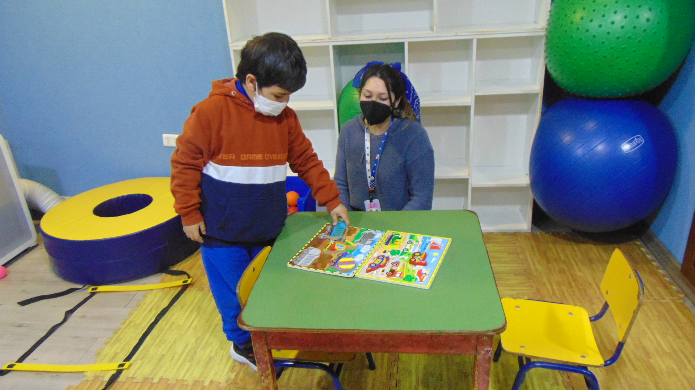

La terapia de fonoaudiología es un proceso de intervención que busca mejorar la comunicación y el lenguaje de las personas con autismo. A través de técnicas y estrategias específicas, los fonoaudiólogos trabajan para desarrollar habilidades de expresión verbal, comprensión del lenguaje, articulación, fluidez y habilidades sociales. El objetivo es facilitar la comunicación efectiva y promover la participación activa en la vida cotidiana.
Reservar hora
En la terapia de fonoaudiología, se abordan diversas dificultades que pueden afectar la comunicación y el lenguaje de las personas con autismo. Algunas de las dificultades que se trabajan son:
Contamos con un equipo de terapeutas especializados en cada área, comprometidos con el bienestar y desarrollo de cada niño.

Diego Bustamante - Fonoaudiólogo
"La terapia de fonoaudiología ha sido fundamental para el desarrollo de mi hijo. Hemos visto mejoras significativas en su comunicación y habilidades sociales. El equipo de profesionales es muy dedicado y comprensivo."
"Gracias a la terapia de fonoaudiología, mi hija ha ganado confianza en su capacidad para expresarse. Los ejercicios y estrategias que nos enseñaron han sido muy útiles en nuestra vida diaria."